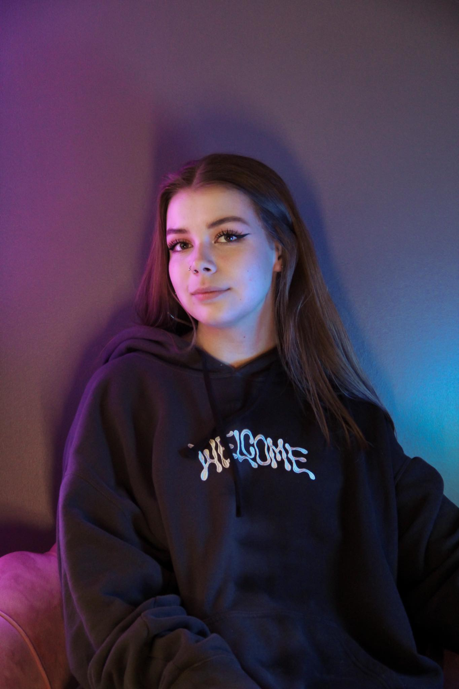

Обо мне
Я Регина Кузнецова ака reginatattoos ака derpff. Я родом из Эстонии и мне сейчас 19 лет. Я занимаюсь рисованием и искусством всю свою жизнь, и это одна из самых важных вещей для меня. Мой первый скетчбук был готов аж в детском саду. В 9 лет я начала ходить к частному репетитору, у которого я получила основы рисования и живописи. Кроме того, я также училась в Тартуской детской художественной школе, куда поступила в возрасте 11 лет и закончила ее с отличием в 2019 году.
Искусство для меня это вся моя жизнь. Я пишу картины, рисую, занимаюсь цифровым искусством, стрит-артом, дизайном одежды, татуировками, и также дизайном помещений. Я верю, что искусство всюду вокруг нас. Искусство не часть моей жизни, искусство и есть моя жизнь. Я черпаю вдохновение отовсюду: из фильмов, случаев из жизни, книг, а также философии. Я считаю что философствование это одна важная часть для того чтобы быть художником. У каждого произведение несколько уровней.
Несколько забавных фактов про меня:
- В 14 лет я с иллюстрировала сборник стихов.
- В 17 летнем возрасте имела собственную фирму рубашек :)
- В 15 лет я выиграла первое место в конкурсе рисование города Тарту, благодаря чему получила финансовую поддержку от города для реализации моего проекта, котором был роспись стены в шанхае в Тарту.